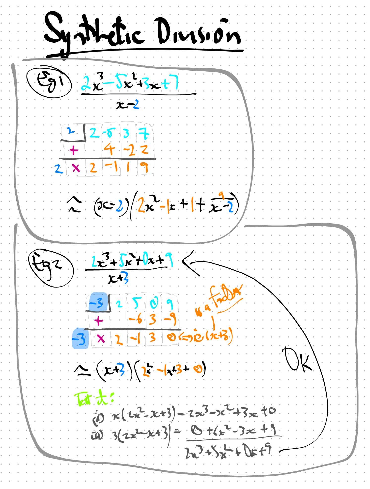
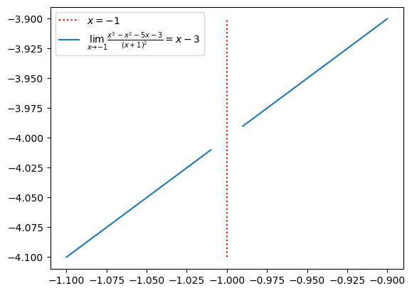

import numpy as np
import matplotlib.pyplot as plt
1. Introduction
From Ex 2.2.85, Thomas 13e pp.77:
\[\lim_{x\to-1}\frac{x^3-x^2-5x-3}{(x+1)^2}\]
2. Factorising \(x^3-x^2-5x-3\)
Check \(x=-1\) is a factor of numerator \(x^3-x^2-5x-3\):
Step 1: Confirm denominator \((x+1)^2\) is \(zero\) at \(x=1\)
Step 2: If so, confirm numerator \(x^3-x^2-5x-3\) is \(zero\) at \(x=1\).
But here, I got stuck as I do not know (or recall) any method to check this.
Hence after some googling/ai-ing, I found a division technique called Synthetic Division.
Below are two practice examples.
3. Synthetic Division Examples
4. Ex2.2.85 Through Synthetic Division
\[\lim_{x\to-1}\frac{x^3-x^2-5x-3}{(x+1)^2}\]
4.1 Synthetic divison \((x^3-x^2-5x-3)\) by \((x+1)\)
| -1 | +1 | -1 | -5 | -3 |
|---|---|---|---|---|
| \(+\) | +0 | -1 | +2 | +3 |
| \(/\) | +1 | -2 | -3 | +\(0\) |
Remainder is \(0\) (bottom right cell).
Therefore \((x+1)\) is a factor of \((x^3-x^2-5x-3)\)
The final line represents the \(coefficients\) of the other factor, that is:
\[x^2-2x-3\]
Therefore \[(x^3-x^2-5x-3)\]
\[=(x+1)(x^2-2x-3)\]
4.2 Back to the question
\[\frac{x^3-x^2-5x-3}{(x+1)^2}\] \[\frac{(x+1)(x^2-2x-3)}{(x+1)(x+1)}\] \[\frac{(x^2-2x-3)}{(x+1)}\] \[\frac{(x-3)(x+1)}{(x+1)}\] \[{(x-3)}\]
\[\lim_{x\to-1}\frac{x^3-x^2-5x-3}{(x+1)^2}\] \[\lim_{x\to-1}(x-3)\] \[(-1-3)\] \[-4\]
5. Ex2.2.85 Through Plotting
5.1 Import libraries
5.2 Create x’s: xs
xs = np.linspace(-1.1,-0.9,21)
xsarray([-1.1 , -1.09, -1.08, -1.07, -1.06, -1.05, -1.04, -1.03, -1.02,
-1.01, -1. , -0.99, -0.98, -0.97, -0.96, -0.95, -0.94, -0.93,
-0.92, -0.91, -0.9 ])5.3 Create function: fx
5.3.1 lambda method
fx = lambda x: (x**3-x**2-5*x-3)/((x+1)**2)5.3.2 def method
def fx2(x): return (x**3-x**2-5*x-3)/((x+1)**2)5.3.3 Check definitions [optional]
import inspect
inspect.getsource(fx)
inspect.getsource(fx2)'def fx2(x): return (x**3-x**2-5*x-3)/((x+1)**2)\n'5.4 Calculate y’s: ys
ys = fx(xs)
ys/tmp/ipykernel_62451/871469998.py:1: RuntimeWarning: invalid value encountered in divide
fx = lambda x: (x**3-x**2-5*x-3)/((x+1)**2)array([-4.1 , -4.09, -4.08, -4.07, -4.06, -4.05, -4.04, -4.03, -4.02,
-4.01, nan, -3.99, -3.98, -3.97, -3.96, -3.95, -3.94, -3.93,
-3.92, -3.91, -3.9 ])5.5 Plot
# plt.scatter(xs,ys,label="Data Points", color='red')
# plt.scatter(xs,ys)
plt.vlines(x=-1,ymin=ys[0],ymax=ys[-1],linestyles="dotted", label="$x=-1$", colors="red")
# plt.plot(xs, ys, label=r"$\lim_{x\to-1}\frac{x^3-x^2-5x-3}{(x+1)^2}$")
plt.plot(xs, ys, label=r'$\lim_{x\to-1}\frac{x^3 - x^2 - 5x - 3}{(x+1)^2}=x-3$',)
plt.legend()
The plot shows limit is \(-4\)